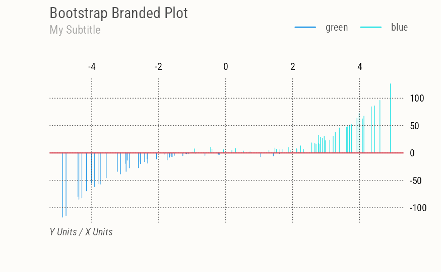
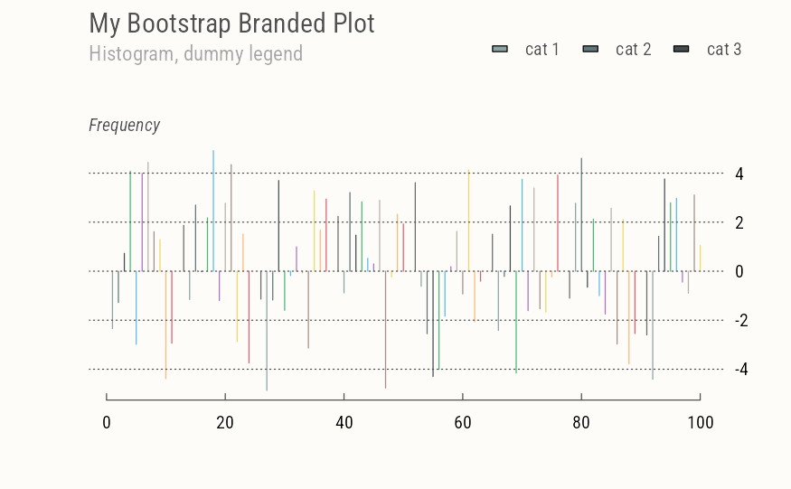

Simply assign default arguments to base R legend(). This function is exported but is not meant to be called directly, use brand_on() instead.
Arguments
- x, y
the x and y co-ordinates to be used to position the legend. They can be specified by keyword or in any way which is accepted by
xy.coords: See ‘Details’.- legend
a character or expression vector of length \(\ge 1\) to appear in the legend. Other objects will be coerced by
as.graphicsAnnot.- bty
the type of box to be drawn around the legend. The allowed values are
"o"(the default) and"n".- horiz
logical; if
TRUE, set the legend horizontally rather than vertically (specifyinghorizoverrides thencolspecification).- xpd
if supplied, a value of the graphical parameter
xpdto be used while the legend is being drawn.- inset
inset distance(s) from the margins as a fraction of the plot region when legend is placed by keyword.
- ...
Arguments passed on to
graphics::legendx,ythe x and y co-ordinates to be used to position the legend. They can be specified by keyword or in any way which is accepted by
xy.coords: See ‘Details’.fillif specified, this argument will cause boxes filled with the specified colors (or shaded in the specified colors) to appear beside the legend text.
colthe color of points or lines appearing in the legend.
borderthe border color for the boxes (used only if
fillis specified).lty,lwdthe line types and widths for lines appearing in the legend. One of these two must be specified for line drawing.
pchthe plotting symbols appearing in the legend, as numeric vector or a vector of 1-character strings (see
points). Unlikepoints, this can all be specified as a single multi-character string. Must be specified for symbol drawing.angleangle of shading lines.
densitythe density of shading lines, if numeric and positive. If
NULLor negative orNAcolor filling is assumed.bgthe background color for the legend box. (Note that this is only used if
bty != "n".)box.lty,box.lwd,box.colthe line type, width and color for the legend box (if
bty = "o").pt.bgthe background color for the
points, corresponding to its argumentbg.cexcharacter expansion factor relative to current
par("cex"). Used for text, and provides the default forpt.cex.pt.cexexpansion factor(s) for the points.
pt.lwdline width for the points, defaults to the one for lines, or if that is not set, to
par("lwd").xjusthow the legend is to be justified relative to the legend x location. A value of 0 means left justified, 0.5 means centered and 1 means right justified.
yjustthe same as
xjustfor the legend y location.x.interspcharacter interspacing factor for horizontal (x) spacing between symbol and legend text.
y.interspvertical (y) distances (in lines of text shared above/below each legend entry). A vector with one element for each row of the legend can be used.
adjnumeric of length 1 or 2; the string adjustment for legend text. Useful for y-adjustment when
labelsare plotmath expressions.text.widththe width of the legend text in x (
"user") coordinates. (Should be positive even for a reversed x axis.) Can be a single positive numeric value (same width for each column of the legend), a vector (one element for each column of the legend),NULL(default) for computing a proper maximum value ofstrwidth(legend)), orNAfor computing a proper column wise maximum value ofstrwidth(legend)).text.colthe color used for the legend text.
text.fontthe font used for the legend text, see
text.mergelogical; if
TRUE, merge points and lines but not filled boxes. Defaults toTRUEif there are points and lines.tracelogical; if
TRUE, shows howlegenddoes all its magical computations.plotlogical. If
FALSE, nothing is plotted but the sizes are returned.ncolthe number of columns in which to set the legend items (default is 1, a vertical legend).
titlea character string or length-one expression giving a title to be placed at the top of the legend. Other objects will be coerced by
as.graphicsAnnot.title.colcolor for
title, defaults totext.col[1].title.adjhorizontal adjustment for
title: see the help forpar("adj").title.cexexpansion factor(s) for the title, defaults to
cex[1].title.fontthe font used for the legend title, defaults to
text.font[1], seetext.seg.lenthe length of lines drawn to illustrate
ltyand/orlwd(in units of character widths).
Examples
set.seed(1)
x = runif(100, min = -5, max = 5)
y = x ^ 3 + rnorm(100, mean = 0, sd = 5)
opar = par(par.brand())
plot(x, y, type="h", col=(y>0)+4)
axes(nx=NULL,
main="Bootstrap Branded Plot", sub="My Subtitle",
xlab="X Units", ylab="Y Units")
abline(h=0, col=pal("red"), lwd=2)
legend_brand(legend=names(pal())[4:5], lty=1, lwd=2, col=4:5)

plot(x, type="h", col=pal())
axes(side=c(1,4),
main="My Bootstrap Branded Plot",
sub="Histogram, dummy legend", ylab="Frequency")
legend_brand(legend=paste("cat", 1:3), fill=pal(1:3))

par(opar)